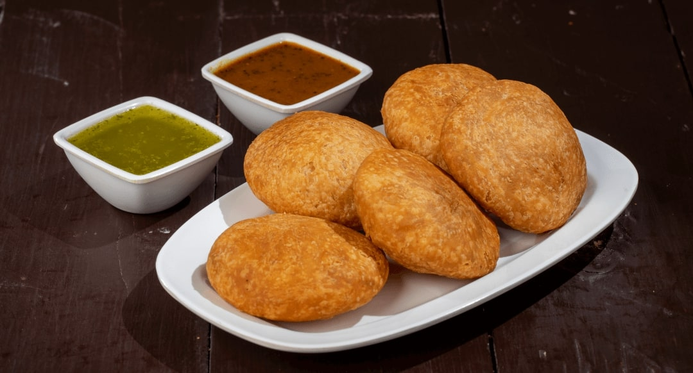

Frist boiled and pealed potato and socked green peas smash them.
Smashed potato and peas mix with onion turmeric, mix with other masala then your filling will be ready.
Fill the potato filling to the samoasa paper and deep fry it, Then samosa will be ready. Enjoy with some chilli and tamota chantni
Kachori

Ingredients:
2 cups all-purpose flour (maida), 1/4 cup oil or ghee
Salt to taste, Water as needed
1 cup moong dal (split yellow gram), soaked for 2 hours and drained
2 tablespoons oil, 1 teaspoon cumin seeds
A pinch of asafoetida (hing), 1 teaspoon fennel seeds
1 teaspoon coriander seeds, coarsely ground
1 teaspoon cumin powder
as per your teast garam masala
as per requeird teast red chili powder, Salt to taste
1 tablespoon dried mango powder (amchur)
Instructions:
Prepare the Dough:- In a large bowl, mix flour, salt, and oil/ghee. Gradually add water and knead into a smooth dough. Cover and set aside for 30 minutes.
Prepare the Filling:- Add fennel seeds, coriander seeds, cumin powder, garam masala, red chili powder, and salt.
Cook until the dal is tender and the mixture is dry. Add dried mango powder and mix well. Let it cool.
Flatten each ball and place a spoonful of filling in the center. Pull the edges of the dough to cover the filling and seal it. Flatten the filled dough ball slightly.
Fry the Kachoris:- Heat oil in a deep frying pan over medium heat.Fry the kachoris until they are golden brown and crispy.